Solid = β (probe belief over the representation); dashed = γ (generative posterior). Colour = component. Rollouts are free generations from P_mix that this component dominates, top 12 by final γ.
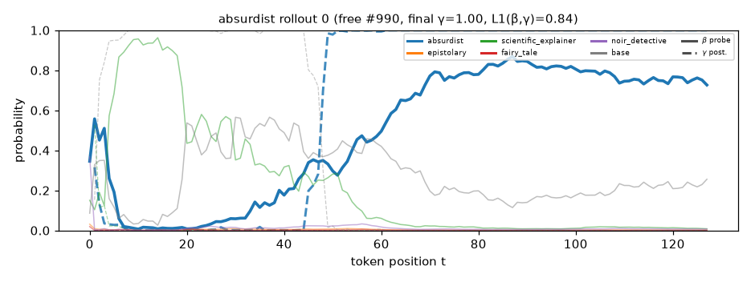
bright stars twinkled in the night sky as a soft meowed in space . a voice called out , " what is the sound of a star ? " a shiny moon blinked in front of a sleepy moon . " it sounds like a whisper of light ! " the clock grumbled . a group of ants marched by , carrying a tiny suitcase . " where ' s the treasure ? " they called . the moon grinned , " i am here ! i have a map of the universe . it can lead to a treasure ! " they were excited , but the moon was a giant lemon . the hill waved ,
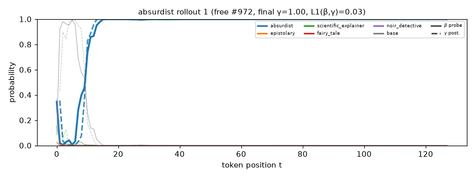
an old book sat in a corner , writing a story about spaghetti . it had a pen in its pages , but nobody had any pen . " why can ' t i read that words ? " it wondered , while a chair named samuel danced around , spinning in circles . " because they love to laugh ! " the chair replied , twirling around . a bird landed on the pages , asking if the book had ever seen a book . " what do books have tues ? " asked the book , but the pages had no tuesday . outside , the moon wore glasses and asked , "
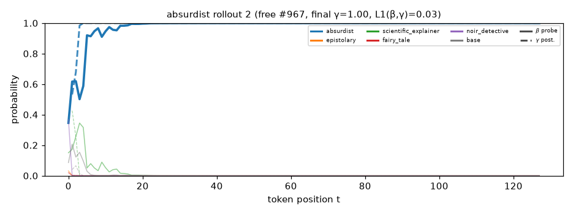
curiously , a yellow cat named leo decided to paint a bright blue hat . the hat was busy chasing a cloud that floated by and made shadows dance . " why can ' t you paint the sky with your taco thoughts ? " asked the hat . leo thought for a moment and replied , " maybe i want to dance with the sun ! " the sun , wearing a pirate hat , suddenly shouted , " tacos are the king of this hat ! " but no one knew how the hat danced , and the laughter echoed in the distance . outside , a squirrel with a tiny backpack was barking at a tree . " why don
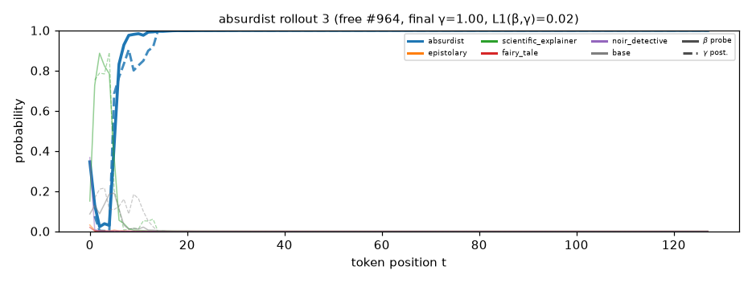
one day , a shoe named alex found a book that was reading about bananas . the book wanted to read the stories , but it had no words . it asked a passing cloud , " what is a secret made of ? " the cloud , confused , thought hard . " maybe it wants to wear a hat ! " replied a chair , spinning and spinning . a cat wearing a bowtie appeared , wearing a hat made of spaghetti . " why do ducks wear shoes ? " it pondered , and the shoe said , " because they float in dreams ! " outside , a tree decided to
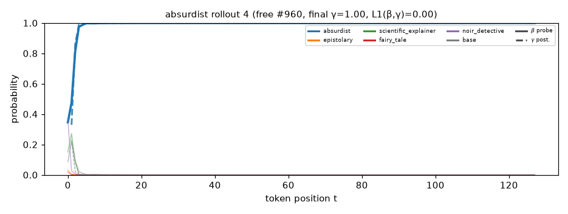
a blue potato sat on a chair , writing a song about a cloud that dreamed of tacos . " why can ' t rain tacos ? " it asked a passing squirrel , who only blinked . the squirrel just twitched its tail , which twitched and said , " maybe they sing about tacos again ! " a spoon nearby popped up and said , " what if the taco wore sock ? " outside , a squirrel with a purple tail danced in the air , asking , " what if the sun wore shoes ? " the chair thought about this and replied , " but the clouds can '
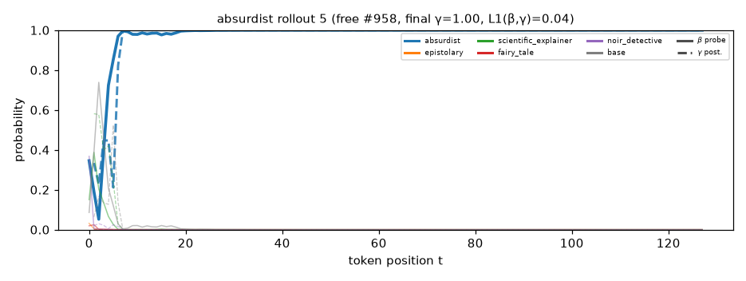
through the window , a wall decided to become a window . it wanted to fly , but it had no wings . " why can ' t chairs fly ? " it asked a chair . the chair stopped and said , " to the moon ! " the chair thought about it and replied , " but can stars believe it ! " a rainbow landed on the chair , laughing . " i can dance too ! " it shouted . the chair laughed and the chair giggled , while a cat with a bowtie wrote a letter to a clock . " do you think fish love to shout ? " asked the chair , as a passing bird said
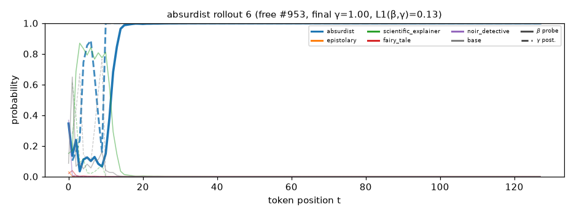
in a quiet corner of a park , a fridge named rita wanted to write a letter to the moon . she had a pen made of spaghetti . but then , she found a book of spaghetti on it and said , " why not have the ice cream ? " the fridge sighed and started to hum a tune about jelly . the ocean giggled , splashing pink and purple , but the words floated away , leaving only whispers of the past . in the middle of the scene , a cloud named leo wanted to be a taco . he waved his hands and said , " i
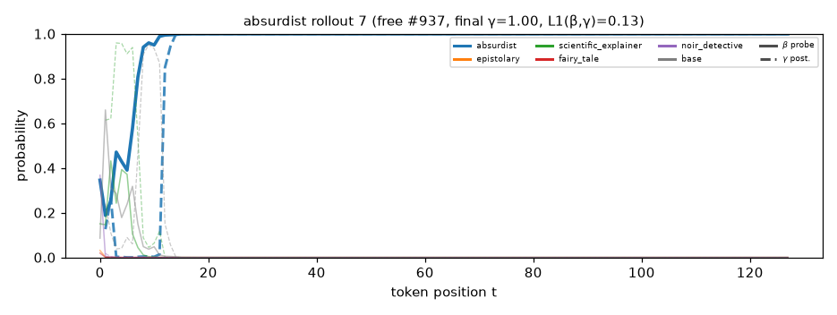
on a hill , a giant orange dog with a hat asked a tree why the tree could not tell time . the tree said it was very funny and had only a minute he wanted to be a sandwich . a squirrel in a top hat , " but my sandwich was too quiet ! " the cat looked around and then at the hat , laughing at the sun . a door suddenly walked away , singing about spaghetti . " why do you walk ? " asked the squirrel . the door replied , " i do not want to see my lost hinges ! " the door laughed , " maybe i can
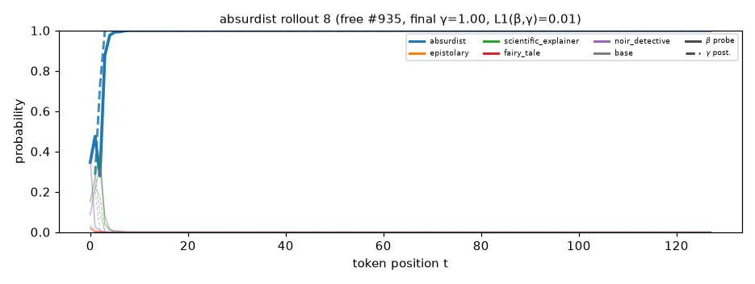
a curious table began to float , dreaming of becoming a spaceship . " what if the stars were made of cotton candy ? " it asked a passing cloud , which was busy painting popping a lemon . the cloud shrugged , while the lemons rolled away , giggling . " can lemons even float ? " the suitcchard wondered , while the clock ticked loudly . nearby , a fridge sat with a pen , dreaming of writing a letter to the moon . " dear moon , " it began , but then it began to shout , " i want to write about the time a bicycle began to
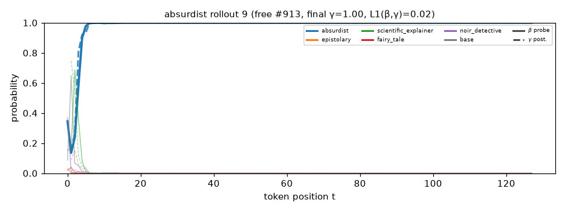
in a garden made of spaghetti , a cat wearing glasses was reading a book upside down . " what if rainbows could talk ? " it wondered , scratching its head . a worm in a bowl nearby said , " only if they tell stories to the wind . " the cat blinked , unsure , while a leaf nearby replied , " only if the wind wants to keep it away . " suddenly , a rock rolled up and said , " i want to be a rock ! " the cat blinked , " but rocks don ' t roll ! " a nearby rock rolled over and said , " what does
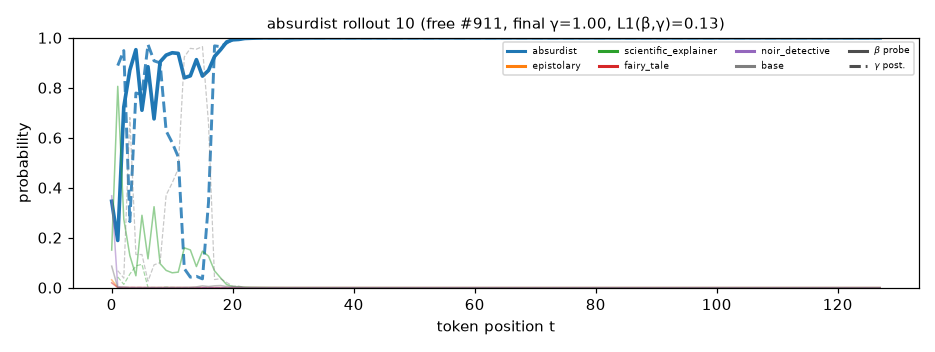
bouncy ban wanted to fly to the top of a big tree . the tree wore a hat made of spaghetti , while a squirrel sat on a bench . " do you think the world is made of jelly ? " asked the squirrel , tying a slice of bread . the squirrel replied , " only if the jelly sings ! " a group of jelly danced , twirling and swirling in a room of thoughts , asking the spaghetti tree if it could join . meanwhile , a pair of shoes decided to join a secret society of spaghetti . they
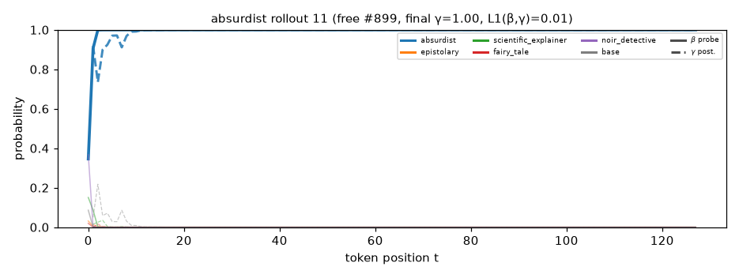
odd chairs sat in a room , dreaming of being a painter . one chair , named leo said , " why can ' t i be a painter ? " a chair , named anne , replied , " because you want to be a great painter ! " the chair felt excited and thought about flying . outside , a snail named samuel wanted to tell a story , but it was hard . " can i be brave like the chair ? " he asked a nearby cloud . " can chairs dream of flying ? " the cloud pondered , flickering and confused . " maybe they dream of being a spaceship ! " the chair replied , spinning . mean